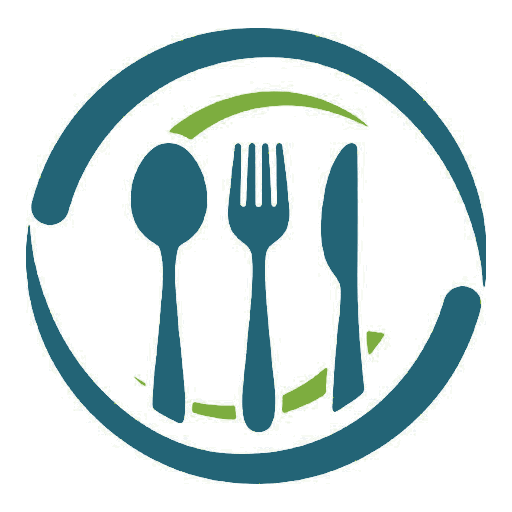

Se te vence la mercadería
Compras pollo el lunes y otra vez el jueves, y nadie sabe cuál hay que gastar primero. Lo que se malogra ya no se recupera.
FoodSync controla el inventario de tu restaurante, vigila los vencimientos y te dice qué plato deja dinero de verdad. Funciona sin internet y todo se guarda dentro de tu propio celular.
14 días de prueba · sin tarjeta · sin compromiso
No hace falta saber de computadoras ni tener a nadie en la oficina. Se usa de pie en la cocina, con una mano y con prisa, que es como de verdad se lleva un restaurante.
Compras pollo el lunes y otra vez el jueves, y nadie sabe cuál hay que gastar primero. Lo que se malogra ya no se recupera.
El que más se vende no siempre es el que más gana. Sin saber cuánto cuesta cada ración, el precio de la carta es una corazonada.
Y cada mes toca rehacer los números a mano para el contador, con el riesgo de que no cuadren con lo que dice la SUNAT.
Vender un lomo saltado descuenta su carne, su papa y su aceite. Esa es la idea: que la cocina y el almacén digan lo mismo.
Cada compra abre su propio lote con su fecha. La app gasta siempre el que vence antes, que es lo que manda la norma sanitaria.
Y si sacas más de lo que hay, te lo dice en vez de callarlo.A qué temperatura va, con qué no juntarlo y en qué señales fijarse para saber si se está echando a perder.
175 alimentos, cada uno con la fuente de donde sale el dato.Anota de qué está hecho cada plato y sabrás cuánto te cuesta, cuánto te deja y qué margen tiene. Ordenados por lo que de verdad aportan.
Vender descuenta del almacén, ingrediente por ingrediente.Ingresos y egresos, ticket promedio, mejor día y los últimos seis meses. Separando lo que entra por salón de lo que entra por delivery.
Y cuánto de lo que pasó por caja no es tuyo, sino del personal.El archivo del formato 14.1 listo para el contador o para el SIRE, y los números del Formulario 621 con lo que de verdad hay que pagar.
Te dice cuánto pierdes por comprar sin factura. Suele ser un 18 %.Cuando te preguntan cuánto cuesta atender un matrimonio de 120 personas, armas el precio y se lo mandas.
No toca el almacén hasta que el cliente acepta.En una cocina la señal va y viene. FoodSync no depende de ella: se instala en el celular como cualquier otra app y a partir de ahí funciona en modo avión.
Registrar una venta no espera a que cargue nada. Todo el cálculo ocurre dentro del teléfono, así que responde al instante aunque estés en el sótano del local.
No hay servidor ni nube: las ventas de tu restaurante no viajan a ningún sitio. No podemos verlas, ni venderlas, ni compartirlas, porque sencillamente no las recibimos.
Un solo archivo. No necesitas cuenta, ni tarjeta, ni Play Store: la app entera va dentro y funciona desde el primer arranque.

Ninguno de estos es una promesa comercial: todos salen de medir la app contra datos reales.
De dónde salen los datos de conservación: FoodKeeper del USDA FSIS · fichas de poscosecha de UC Davis · Agriculture Handbook 66 del USDA · FDA Food Code · y la norma sanitaria peruana de DIGESA (RM N.º 363-2005/MINSA), que manda cuando es más estricta que la referencia estadounidense.
Sin tarjeta para empezar. Si no te convence, no pagas nada y te llevas tus datos en un archivo.
Un local, hasta cinco personas usándolo.
S/ 9.90al mes
o S/ 105.99 al año y te ahorras S/ 12.81
Varios locales y todo el personal que haga falta.
S/ 55.00al mes
o S/ 600.00 al año y te ahorras S/ 60.00
Los precios ya incluyen IGV. Puedes cancelar cuando quieras desde la app y el servicio te sigue funcionando hasta el último día que pagaste. Y aunque dejes de pagar, exportar tu información sigue siendo gratis y estando disponible: es tuya.
Preferimos decírtelo aquí y no que te enteres el día que lo necesites.
Prepara los números y el archivo del mes, pero no se conecta con la SUNAT, no emite comprobantes electrónicos y no firma nada. Eso exige certificado digital y un operador autorizado. Aquí se preparan los números; declararlos es cosa tuya o de tu contador.
Te da las cifras ordenadas y te avisa de lo que no cuadra, pero la responsabilidad de lo que se declara sigue siendo del restaurante.
Es la otra cara de que tus datos no salgan del celular: si desinstalas la app o borras los datos del navegador, se pierden. Por eso la app trae un botón de respaldo y conviene usarlo de vez en cuando.
Cada celular es independiente. Lo que registres en uno no aparece en el otro: hoy se pasa con un archivo de respaldo.
Somos un equipo de Moquegua. Si algo no funciona o no sabes cómo hacerlo, escríbenos: contesta una persona, no un robot.